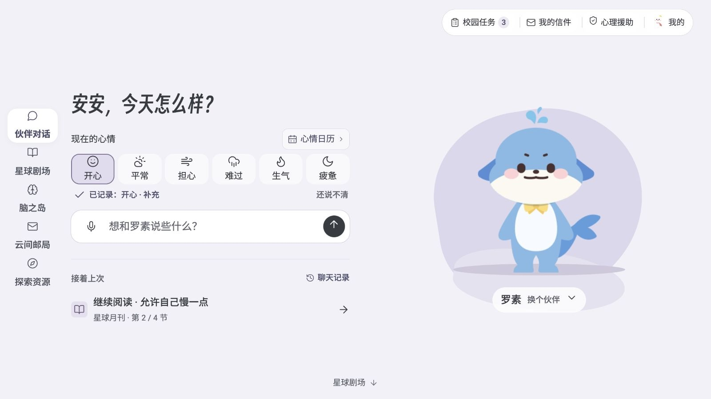
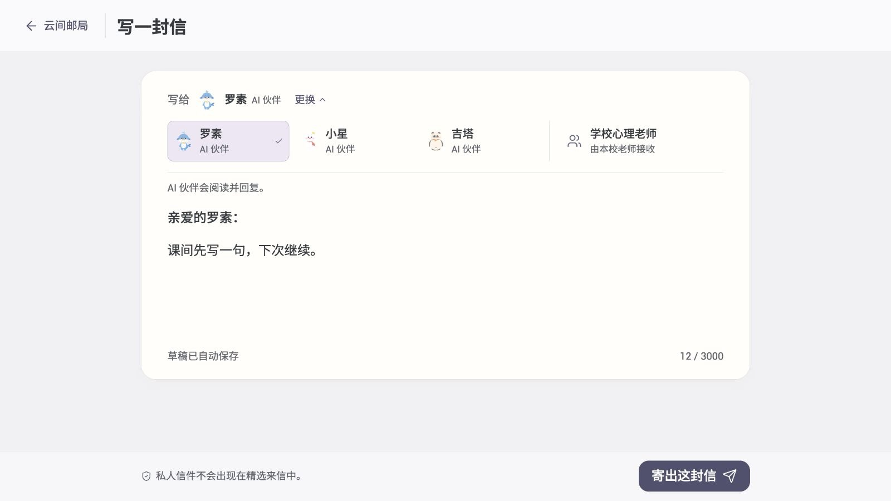
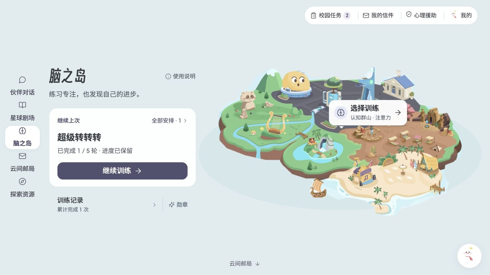

01 · 首页：此刻表达与历史续接分清主次
设计落点：心情选择与直接输入共同服务当前表达，聊天历史与续读归在后方。直接聊天无需先打卡；日历记录有独立路径，保存后回日历。当前六个快捷状态与“说不清”属于候选。
查看浏览器检查范围与结果
检查证据：1280 × 800 浏览器视口下，心情、输入、历史组均在首屏；模拟键盘打开后，历史组整体收起。日历新增记录与历史草稿恢复在指定路径中通过本地检查。

案例 01 · 减压星球 · 2026.06—10
面向在校学生的 Pad 心理支持产品。我把现状诊断、竞品机制研究、体验地图和情绪表达研究转成产品取舍：让分散的功能形成低压力、可自主选择、能中断后继续的支持体验；匹配上线窗口，分版本推进方案，并完成可操作原型与交接。
代蓉婷 · 体验设计师 ｜ 本人工作：研究统筹、产品与体验判断、交互/UI 方案、AI 协同交付
研究与设计已形成UX-03 待评审 · 本地模拟
减压星球已有心情记录、AI 对话、心理内容、认知训练与写信等能力。服务对象是 9–18 岁在校学生，重点情境包括初次使用、再次回来，以及课间被打断后继续。设计需要同时回答：此刻从哪里开始、为什么适合我、做完之后去哪里。
本轮目标是降低找到下一步的判断成本，强化表达、陪伴和行动之间的衔接。由于开发上线时间不足，我决定分版本迭代：匹配当前上线窗口，先推进无需后端改造的信息架构、入口与体验优化；需要新增数据、记忆和推荐的能力进入后续版本评估。Q3 Demo 因此明确不改后端和数据结构，优先处理重要入口较深、资源零散与模块主次不清。
项目依据：6 月产品诊断；8 月 17 日首页与资源重组决策；10 月项目记忆。开发上线时间与分版本决策由本人于 2026-10-13 确认；本案例展示设计交付，不据此宣称已上线或后续版本已排期。
我从 23 张实机截图与 APK 分析建立现状认识，继续用四类场景、六个体验阶段对照在线版与升级目标。核心判断是：各模块分别提供了能力，但学生仍需自己判断先做什么、如何转到下一步；陪伴入口、完成反馈和回访承接需要成为同一段体验。
| 现状观察 | 我的专业判断 | 进入设计的方向 |
|---|---|---|
| 首页心情与 AI 大卡相近权重；又有话题与内容入口 | 重点不是把入口做得更显眼，而是明确动作主次，避免用户自行解释多个相似入口。 | 首页围绕此刻表达与直接聊天组织主区，历史与续读承担后续角色。 |
| 六月界面中，切换模块后伙伴入口不持续；成果反馈留在模块内 | 心理支持需要任务中的可达性，也需要完成后的承接；不能只在首页展示角色。 | 区分首页邀请与其他模块的随时召回，设计返回、完成反馈与继续上次。 |
| 月刊、联名内容、通信与工具具有不同业务属性 | 分类既要符合学生的需要，也要保留内容、操作与服务之间的差异。 | 按四类业务分别表达，再提供需要、时间、关键词等找资源入口。 |
| 线上四个心情标签语义交叠，且表达与评价混在一起 | 选项数量只是表层问题；还要研究词语理解、支持差异、自由表达及历史数据的可比性。 | 形成快捷状态＋说不清＋按需展开的候选；不赋情绪分数、不硬映射旧数据。 |
产品方向：看见此刻状态 → 被接住 → 自主选择一个低压力行动 → 留下可回看的痕迹 → 下次自然继续。
这是一条组织产品的原则，不要求每次使用都走完所有步骤。学生可以直接聊天、独立记录、找内容，也可以到此结束。截图和 APK 支持结构事实；体验地图中的心理感受与情绪曲线是设计推演，未作为真实学生研究结果。
我把两套 AI 研究材料收敛到三条 Flow：A 首页启动、B 伙伴回应与安全边界、C 轻完成反馈。研究不按 App 堆功能，而是逐项判断“为什么有效、对本产品有什么用、应该舍弃什么、怎样进入页面与检查项”。
| 研究参考与机制 | 迁移时的取舍 | 本产品的设计输出 |
|---|---|---|
| Headspace：当前状态与清晰的主要行动 | 借清晰层级与内容聚焦；保留减压星球的亲和 IP 和丰富业务。 | Flow A 明确首屏主行动，其他入口按需要分层；研究后进入首页 IA 与布局评审。 |
| How We Feel：情绪词与允许表达不清 | 借表达入口；控制首层词汇量，避免低年级被复杂词表卡住。 | “说不清”成为有效表达；比较四项、六项、更多感受与维度选择的优劣，形成文案与测试建议。 |
| Finch / Voidpet Garden：小行动、伙伴反馈、可见变化 | 借轻行动与被看见的反馈；降低连续签到压力，将完整养成、商店与地图留在范围外。 | Flow C 解释“做了什么、有什么意义”；日历强调回看，完成反馈保持轻量，长期成长另行评估。 |
| Lightly：回应、反思小结与温和下一步 | 借先接住再收束；减少长报告与复杂自我分析，允许不回答和结束。 | 对话先确认感受，再提供自愿的下一步；状态影响回应方式，用户意愿决定行动。 |
| Pooca / Replika：陪伴语气与记忆的关系价值 | 借温暖与连续感；明确不依赖、不过度亲密，可控记忆是未来能力前提。 | 形成角色语气、可见/可拒绝/可删除的记忆原则；Demo 中的历史承接与会话状态标清模拟范围。 |
| Woebot / Wysa 历史资料：能力与安全支持边界 | 只用于校准支持边界，不以历史资料冒充现役实机验证。 | 安全支持入口可达；不承诺绝对保密，不从单次状态选择推断诊断或风险等级。 |
研究进一步沉淀成六项设计原则：主行动清楚、允许说不清、先回应再收束、记忆可控、完成被看见、安全边界先于情绪承诺。三条 Flow 让原则有明确的页面、状态与验证落点。
来源：《Day03–05 竞品分析整合定稿版》《核心竞品洞察汇总》。表中呈现项目研究所提炼的机制与设计输出；六个核心标杆是研究范围，不据此声称六个实机深跑均已完成。
| 讨论中的问题 | 进入产品的取舍 | 证据与状态 |
|---|---|---|
| 完整方向与当前上线窗口如何匹配 | 分版本迭代：先推进无需后端改造的 IA 与体验优化，将新增数据、记忆和推荐能力放入后续版本评估。 | 开发上线时间不足与分版本决策由本人 10 月 13 日确认；8 月记录支持本轮不改后端的范围。尚未据此确认上线结果或后续排期。 |
| 帮助入口是否再加一层分流 | “现在需要什么帮助”直接进入 AI，保留独立心情记录；让表达尽快得到承接。 | 8 月 17 日决策记录标为产品已确认。后续原型保留不用先打卡的直接输入。 |
| 是否统一合并成“学生资源中心” | 月刊、联名内容、通信服务、工具集合分别表达，避免相同卡片掩盖业务差异。 | 8 月 17 日记录标为已修正；成为资源组织与首页重组的设计依据。 |
| 首页已选心情，内页是否还要再选一次 | 已选状态传入后续流程；无状态入口与修改状态保留选择能力。 | 8 月 18 日工作基线明确避免重复选择。10 月候选按首页聊天、日历独立记录分别承接。 |
| 日历怎样鼓励回来 | 用“看见自己来过”的回看逻辑；不把漏打卡、断签和补签放在中心。 | 8 月 18 日工作基线及后续心情决策。UX-03 已有本地多条记录与独立保存路径。 |
| 更多角色是否能增强陪伴 | 主伙伴承担持续关系，其他角色只在合适情境参与；不把角色数量转成更多常驻入口。 | 7 月角色层级记录有本人对主 IP 被抢角色的质疑；8 月进一步限制未经确认的邻居匹配与记忆进入 Demo。三位伙伴的业务能力不被固定标签锁死。 |
这些取舍把研究落实为入口、信息架构、状态传递和角色关系。它们能够说明研究对方案的影响；是否降低理解成本、增强被理解感，仍由后续真实使用验证回答。
研究给出完整产品方向，版本决策明确每一步怎样推进。当前窗口优先交付现有能力的组织与体验；后续再评估依赖新数据与后端的能力，避免把长期方向一次塞进首轮交付。
| 产品洞察与设计方向 | 当前版本可推进的范围 | 预期体验价值与后续版本方向 |
|---|---|---|
| 情绪入口形成支持链 表达 → 回应 → 自主下一步 | 重组首页、开场话题、上下文提示与必要的返回节点；用脚本验证衔接，不新增真实 AI 能力。 | 让学生少做重复表达和功能判断。真实动态推荐、跨天情绪记忆需单独确认数据能力。 |
| 情感化强调自主权 说不清、只记录、暂停和结束都被接纳 | 保留直接聊天和日历独立记录；原因选填、轻量完成、草稿与中断恢复；不奖励开心或惩罚难受。 | 让表达更自然、减少被检查感。候选词语按学段验证后再决定是否替换线上分类。 |
| IP 参与功能与反馈 角色回应动作，而非单纯装饰 | 形成平面 IP、抽象空间、清晰大字与克制反馈的方向；品牌世界、页面结构、交互反馈分层借鉴。 | 在舒适与可理解的基础上建立品牌陪伴感。完整动作、换装资产与新增邻居机制按范围另行评审。 |
| 完成留下痕迹，回来不受罚 | 现有记录入口前置、明确本次完成与继续上次；轻反馈不增加第三个业务步骤或新的奖励字段。 | 让一次小行动有意义，让间隔后仍能继续。持久化空间、累计成长、货币与地图保留为长期产品愿景。 |
| 记录保留原意，统计尊重语义 | 形成标签、原始选择、版本、编辑/新增及统计口径的决策文档；本轮不改现有接口或历史数据。 | 防止将“说不清”视为坏数据、把次数当人数或将类别强行赋分。未来接数据时需核对接口、权限与迁移方案。 |
“从督促用户持续使用，转向用户什么时候回来都能被接住。”
我将这一原则落实到回看、入口、轻反馈与续接设计。视觉方向同样服务体验：场景形成氛围，文字解释用途；角色的目光、姿态和短回应说明“听见了”和“下一步是什么”。避免让插画、奖励或持续动态争夺注意力。
依据：8 月不改后端方案及范围收敛、9 月 IP 品牌化与 Pad 空间交互思考、10 月心情决策与项目记忆，以及本人 10 月 13 日确认的分版本决策。表中体验价值是设计目标，后续能力是迭代方向，未写成上线成效或已确定排期。
| 环节 | 我承担的工作 | AI 承担的工作 |
|---|---|---|
| 研究与定范围 | 明确人群、场景、问题与技术约束；判断参考机制是否适合学生及本产品。 | 整理 APK、截图与资料；拆解竞品机制与 Flow，汇总冲突和证据缺口。 |
| 整合与决策 | 收口业务属性、操作主次、角色关系、低压力原则和文案；修正过度扩展或误认现状。 | Claude 资料补充机制、状态与文案细节；Codex 按 Flow 组织为范围、设计输入和检查项。 |
| 方案与原型 | 进行交互/UI 取舍，审核全页动线、局部操作归属、视觉与动态状态。 | 生成结构方案、设计说明与 HTML 实现，按具体反馈迭代。 |
| 检查与交接 | 提出初次、回访、课间中断、返回和键盘等检查场景；判断可交付范围与下一阶段。 | 执行浏览器走查与资源/脚本检查，保存截图、验收记录、审核清单和接手资料。 |
一项可核对的流程变化是：2026 年 7 月 21 日将 Claude 估分表、Codex 基线表与竞品走查任务单三份并行来源，收束为一份唯一主工作台；旧材料保留为参考与归档。观察、证据、评分与设计输入因此有统一记录入口。
这证明资料组织与协作方式的变化。尚无同质量、同范围的前后计时，不将“3 份来源 → 1 份主工具”换算为效率提升比例，也不把 AI 估分当学生实测。
浏览研究成果档案：完整报告、双体验地图、设计提案与验证工具 ↗
| 阶段 | 已形成的成果 | 用途 |
|---|---|---|
| 现状理解 | 基于截图与 APK 的产品诊断；诊断、设计系统、策略、流程原型与世界观/IP 共 20 份专题 HTML。 | 建立共用的产品认识，区分现有能力、结构问题与升级建议。 |
| 研究转方案 | 竞品范围与计划、5 份独立深度分析及核心洞察汇总；Flow A/B/C 整合稿、六项原则、设计决策记录。 | 将机制研究对应到页面、状态、文案、实现边界与验证问题。 |
| 目标体验 | 在线版与升级目标体验地图：四类场景 × 六个阶段，配套对照与证据说明。 | 把发现、开始、支持、行动、完成、回访的断点放在同一段体验中讨论。 |
| 方案与验证准备 | 可操作 HTML 候选原型、设计说明、浏览器验收与截图；7 月 6 日评估套装 16 个 HTML 路径（内容去重 14 份），7 月 17 日现状/Demo/对比三套工具。 | 让设计可演示、检查与接手，也为真实学生测试准备任务、记录与对比框架。 |
| 经验沉淀 | AI 协作规则、项目记忆、设计实践记录、审核清单、接手指南与团队分享工具包。 | 把本项目的范围治理、决策留痕和审核方法转成可复用材料。 |
文件数量按当前归档实查：20 份为产品报告正文专题，不含 2 份历史索引/QA 与 1 份阅读导航；16 个测试套装路径包含导航与参考，内容去重后为 14 份。数量说明成果范围，不代表测试执行次数或效率。
下面用 UX-03 的三组操作展示设计落点。UX-03 为上一版完整流程待评审候选，采用本地模拟数据；其验证范围与其他候选分开记录。
设计落点：心情选择与直接输入共同服务当前表达，聊天历史与续读归在后方。直接聊天无需先打卡；日历记录有独立路径，保存后回日历。当前六个快捷状态与“说不清”属于候选。
检查证据：1280 × 800 浏览器视口下，心情、输入、历史组均在首屏；模拟键盘打开后，历史组整体收起。日历新增记录与历史草稿恢复在指定路径中通过本地检查。

设计落点：收件人原位展开，称呼、正文与发送沿同一阅读轴组织；保留信纸主容器，减少重复套卡。更换收件人保留正文，离开后可以续写；私人信件与公开精选清楚分开。
检查证据：浏览器中更换收件人、输入、返回邮局再续写，收件人与正文保留。1280 × 800 视口下，收件选项、输入及发送操作在模拟键盘状态下可见。

设计落点：当前训练与继续操作优先；训练选择、记录与帮助承担不同层级。先说明能做什么，再以世界观与插画建立识别，支持课间暂停与下次继续。
检查证据：暂停保存后可恢复到第 2／5 轮；选择训练、查看记录与继续训练分别进入对应页面。简化演示验证路径及状态保存，尚未连接完整训练后台。

本案例已形成研究理解、产品决策、体验方案、可操作原型、检查记录与接手材料。其价值可以从决策和交付直接核查；上线结果与真实学生使用效果另行验证。
| 证据层级 | 可以确认的范围 |
|---|---|
| 现状与方案 | 截图/APK 支持结构事实；体验地图的感受是推演；六状态、品牌空间和长期成长分别按候选或概念使用。 |
| 原型与设备 | 指定浏览器路径及 1920 × 1080、1280 × 800 等视口检查；实际 Android Pad、原生输入法、系统字号与触控仍需真机验证。 |
| 版本与业务 | UX-03 为上一版完整流程待评审候选；UX-04 独立候选。用户倾向的人工高保真方案 04 与代码 UX-04 是不同对象。真实服务与权限未接通。 |
| 效果与推广 | 测试工具与分享材料已形成；尚无真实学生可用性结果、上线业务指标或团队采用人数的证据。 |
下一阶段优先验证目标年级对心情词的理解、入口发现与中断恢复，结合真实 Pad、实际业务和内容数据评审。比较方案时固定其他变量，观察犹豫、改选与解释；完成更快不能单独证明表达更准确或心理状态改善。